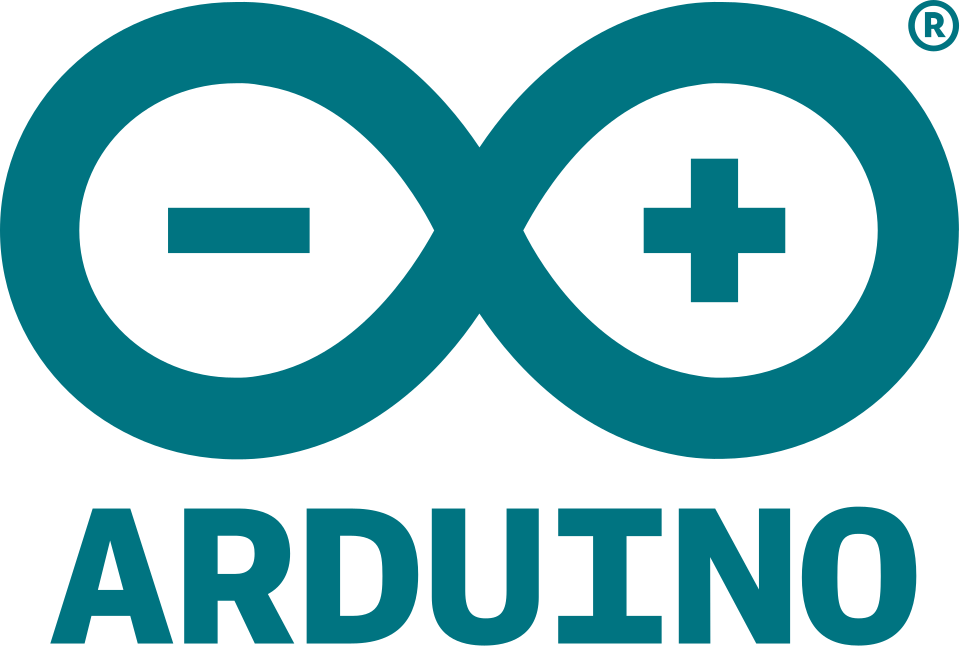

Projet Arduino + Impression 3D
Ce projet consiste à concevoir un jeu basé sur un système Arduino permettant de mesurer la précision du joueur sur une durée donnée.
L’objectif est de concevoir un dispositif simple et interactif dans lequel le joueur doit arrêter un chronomètre à un temps précis, ici 10 secondes, à l’aide d’un bouton et d'un écran LCD.
Le but du joueur est d’arrêter le chronomètre le plus proche possible de 10 secondes.

Le matériel pour le montage de la partie Arduino est la suivante :
| Composant | Quantité |
|---|---|
| Carte arduino uno | 1 |
| Ecran LCD 2x16 | 1 |
| Bouton poussoir | 1 |
| Câbles | 6 |
#include <LiquidCrystal_I2C.h>
const int bouton = 1;
LiquidCrystal_I2C ecran(0x27, 20, 4);
unsigned long tempsDepart = 0;
unsigned long tempsEcoule = 0;
bool chronoEnCours = false;
bool etatBoutonPrecedent = HIGH;
bool jeuDemarre = false;
// Pour l'alternance d'affichage
unsigned long dernierChangement = 0;
bool afficherTemps = false;
void setup() {
ecran.init();
ecran.backlight();
pinMode(bouton, INPUT_PULLUP);
pinMode(8, OUTPUT);
// Message initial
ecran.setCursor(0, 0);
ecran.print("Appuie pour");
ecran.setCursor(0, 1);
ecran.print("jouer");
}
void loop() {
bool etatBouton = digitalRead(bouton);
// alternance visuel
if (!jeuDemarre) {
if (millis() - dernierChangement > 3000) {
afficherTemps = !afficherTemps;
dernierChangement = millis();
ecran.clear();
if (afficherTemps) {
ecran.setCursor(0, 0);
ecran.print("Temps: 0:00");
} else {
ecran.setCursor(0, 0);
ecran.print("Appuie pour");
ecran.setCursor(0, 1);
ecran.print("jouer");
}
}
}
// detection appui
if (etatBoutonPrecedent == HIGH && etatBouton == LOW) {
// 1e clic = démarrage
if (!jeuDemarre) {
jeuDemarre = true;
chronoEnCours = true;
tempsDepart = millis();
ecran.clear();
}
// 2e clic = arrêt
else if (chronoEnCours) {
tempsEcoule = millis() - tempsDepart;
chronoEnCours = false;
ecran.clear();
ecran.setCursor(0, 0);
ecran.print("Temps: ");
ecran.print(tempsEcoule / 1000.0);
ecran.setCursor(0, 1);
if (abs(tempsEcoule - 10000) < 300) {
ecran.print("VICTOIRE !");
tone(8, 1000, 500);
} else {
ecran.print("PERDU !");
tone(8, 200, 500);
}
}
// 3e clic = reset
else {
jeuDemarre = false;
ecran.clear();
}
delay(200);
}
etatBoutonPrecedent = etatBouton;
// affichage du chrono
if (chronoEnCours) {
tempsEcoule = millis() - tempsDepart;
ecran.setCursor(0, 0);
ecran.print("Temps: ");
ecran.print(tempsEcoule / 1000.0);
}
}